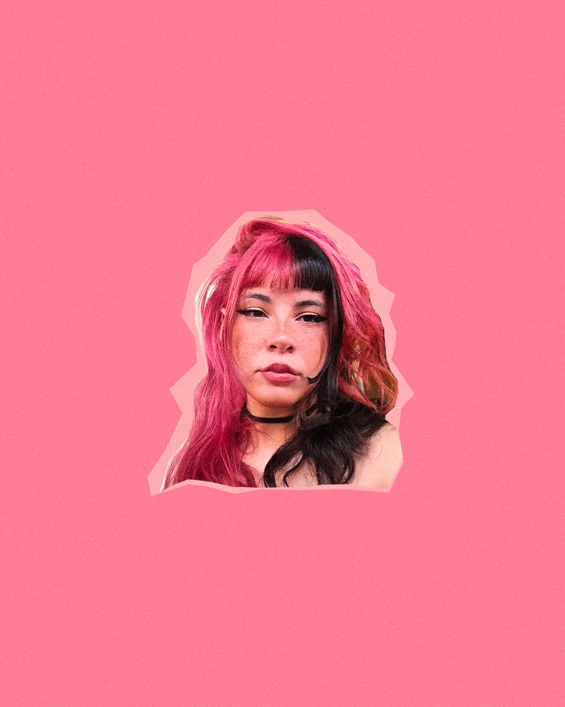

início
seja bem-vindo(a)! este espaço foi criado para reunir meus principais trabalhos e estudos na área de design gráfico e mídias digitais.
acredito no poder do design como ferramenta de conexão e transformação visual. navegue pelas seções para conferir como transformo ideias em projetos criativos e funcionais.
apresentação
sou estudante de mídias digitais e trabalho com foco em criar soluções visuais e interativas.

meus projetos
confira abaixo alguns dos trabalhos desenvolvidos:
posts para redes sociais

criação e layout de posts interativos para redes sociais, focando em engajamento e identidade estética constante.
sketchbook

registro de estudos visuais e rascunhos no sketchbook, explorando novas ideias e conceitos criativos.
identidade visual

desenvolvimento de manual de marca e paleta de cores para criar uma comunicação visual marcante.
capa de single

projeto gráfico para capa de single musical, combinando fotografia, tipografia e ilustração.
posters

criação de posters conceituais com composição visual focada em impacto e expressão artística.
folders

diagramação de folders institucionais e promocionais para apresentação de informações claras e organizadas.